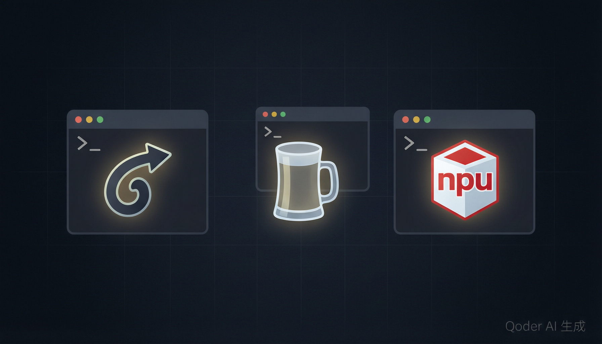
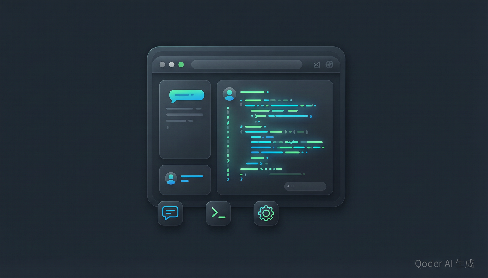

📚 目录
什么是 Qoder CLI
Qoder CLI（命令行工具 qodercli）是 Qoder 产品家族中面向开发者的核心工具。
它直接运行在你的终端中，将 AI 编程助手的能力带入命令行工作流，让你无需离开熟悉的开发环境就能获得智能代码生成、项目分析、自动化任务等能力。
与传统的 IDE 插件不同，Qoder CLI 天然支持无头（headless）运行，可以轻松集成到 CI/CD 流水线、脚本自动化和远程服务器环境中。 它支持 macOS、Linux 和 Windows 三大平台，覆盖 arm64 和 amd64 两种 CPU 架构。
⚡ 智能对话
在终端中与 AI 自然语言对话，描述需求即可生成代码、调试问题或获取建议。
🔧 内置工具链
自带 Grep、Read、Write、Bash 等工具，AI 可以直接读取和修改你的项目文件。
🔌 MCP 扩展
通过 Model Context Protocol 连接外部服务和数据源，无限扩展 AI 的能力边界。
🛡 精细权限
多层权限模型精确控制 AI 的每个操作，确保安全和可控。
三种方式快速安装

Qoder CLI 提供了三种主流安装方式，满足不同开发者的偏好。无论你习惯使用包管理器还是直接通过脚本安装，都能快速上手。
方式一：cURL 一键安装（推荐）
最快捷的方式，适合 macOS 和 Linux 用户。一行命令即可完成下载安装：
curl -fsSL https://qoder.com/install | bash方式二：Homebrew 安装
如果你已经在用 Homebrew 管理工具链，这种方式最符合你的工作流：
brew install qoderai/qoder/qodercli --cask方式三：NPM 安装
跨平台方案，macOS、Linux 和 Windows 用户均可使用：
npm install -g @qoder-ai/qodercli验证安装：安装完成后，运行 qodercli --version 确认安装成功。如果能正常打印版本号，说明一切就绪。
注意：Windows arm64 平台暂时还不受支持。Windows 用户请通过 NPM 方式安装，并使用 Windows Terminal 以获得最佳体验。
身份认证与登录
安装完成后，下一步是完成身份验证。Qoder CLI 提供了两种登录方式，分别面向交互式使用和自动化场景。
1 交互式登录（推荐日常使用）
启动 CLI 后，输入 /login 命令即可进入登录界面。你可以选择两种方式：
# 启动 Qoder CLI
qodercli
# 在交互式提示符中输入 /login
/login
# 选择登录方式：
# - login with browser → 打开浏览器完成认证
# - login with personal access token → 粘贴 Token获取 Token：访问 qoder.com/account/integrations 即可生成 Personal Access Token。
2 环境变量登录（适合 CI/CD）
在自动化脚本或 CI/CD 流水线中，通过设置环境变量完成无交互认证：
export QODER_PERSONAL_ACCESS_TOKEN="your_personal_access_token_here"set QODER_PERSONAL_ACCESS_TOKEN="your_personal_access_token_here"优先级：如果同时通过 /login 和环境变量设置了有效令牌，/login 提供的令牌优先生效。
TUI 交互模式详解

TUI（Terminal User Interface）是 Qoder CLI 的默认运行模式。在任意项目根目录运行 qodercli 即可进入，你会看到一个交互式的对话界面，可以通过文本与 AI 进行自然语言交流。
四种输入模式
TUI 内置了四种输入模式，通过不同的前缀符号快速切换：
| 前缀 | 模式 | 说明 |
|---|---|---|
> |
对话模式 | 默认模式，输入任意文本与 AI 对话 |
! |
Bash 模式 | 直接运行 Shell 命令，无需离开 TUI |
/ |
斜杠命令 | 执行内置功能命令 |
\ + Enter |
多行输入 | 按 Enter 开始多行文本编辑 |
内置斜杠命令速查
以下是最常用的斜杠命令，掌握它们可以大幅提升你的使用效率：
| 命令 | 功能 |
|---|---|
/login | 登录 Qoder 账号 |
/help | 显示 TUI 帮助信息 |
/init | 在项目中初始化或更新 AGENTS.md 记忆文件 |
/memory | 打开记忆管理器，管理各级记忆文件 |
/quest | 执行基于 Spec 的委派任务 |
/review | 对本地代码改动进行 AI 代码评审 |
/resume | 查看并恢复历史会话 |
/compact | 压缩总结当前会话历史上下文 |
/status | 查看 CLI 状态（版本、模型、连通性等） |
/config | 查看系统配置 |
/usage | 显示 Credits 使用情况 |
/vim | 调用外部编辑器编辑输入内容 |
/quit | 退出 TUI |
/logout | 退出 Qoder 账号 |
高级启动选项
启动 CLI 时可以通过参数定制行为，以下是最实用的几个选项：
# 指定工作区目录启动
qodercli -w /Users/demo/projects/my-app
# 继续上次的会话
qodercli -c
# 恢复指定会话
qodercli -r xxxxxxxx-c09a-40a9-82a7-a565413fa393
# 仅允许指定工具（限制 AI 能力范围）
qodercli --allowed-tools=Read,Write
# 设置最大对话轮数
qodercli --max-turns=10
# 跳过权限检查（仅在可信环境使用）
qodercli --yoloPrint 模式：非交互式自动化
Print 模式是 Qoder CLI 的非交互式运行模式，特别适合脚本集成和自动化流水线。
通过 --print 参数激活，输出会按指定格式打印到标准输出，方便其他程序解析。
# 基本的非交互式运行
qodercli -q -p "分析这个项目的主要架构"
# 指定 JSON 格式输出
qodercli --print --output-format=json -p "列出所有 TODO 注释"
# 指定 stream-json 实时流式输出
qodercli --print --output-format=stream-json -p "重构这个函数"| 输出格式 | 适用场景 |
|---|---|
text | 纯文本输出，适合人阅读或简单管道处理 |
json | 结构化 JSON 输出，适合程序解析和 API 集成 |
stream-json | 流式 JSON 输出，适合实时展示处理进度 |
CI/CD 集成提示：在自动化环境中，建议搭配环境变量认证和 --output-format=json 使用，并将结果通过管道传递给后续处理步骤。
Worktree 并行开发
当你需要在同一个代码仓库中并行处理多个任务时，--worktree 参数是你的好帮手。
它利用 Git worktree 功能，为每个 AI 会话创建独立的工作目录，避免多个任务互相干扰。
# 在名为 feature-a 的 worktree 中启动会话
qodercli --worktree feature-a
# 直接指定任务
qodercli --worktree feature-a "Implement the login fix"
# 自动生成 worktree 名称
qodercli --worktree
会话结束时，CLI 会打印 worktree 的路径以及恢复会话的命令。当你完成工作后，可以用 git worktree remove 清理不再需要的 worktree。
前提条件：必须在 Git 仓库中运行该命令，并确保本地已安装 Git。
典型并行开发场景
假设你正在开发一个 Web 应用，需要同时修复一个登录 Bug、实现新的搜索功能、以及重构数据库层。 你可以开三个终端窗口，分别用不同的 worktree 名称启动 Qoder CLI，每个会话在独立的目录中工作，互不干扰。
qodercli --worktree fix-login "修复登录超时问题"qodercli --worktree search "实现全文搜索功能"qodercli --worktree db-refactor "重构数据库连接池"权限系统深度解析
安全性是 Qoder CLI 的核心设计理念之一。每次工具调用前，CLI 都会执行权限检查，确保 AI 的每个操作都在你的控制之下。权限判定有三种结果：
ALLOW 允许
立即执行工具，无需确认。
ASK 询问
在交互会话中弹出确认提示。
DENY 拒绝
阻止本次工具调用。
六种权限模式
通过 --permission-mode 参数选择适合当前场景的权限模式：
| 模式 | 适用场景 | 行为说明 |
|---|---|---|
default |
常规交互式使用 | 安全操作自动执行；敏感操作请求确认 |
accept_edits |
日常编码任务 | 自动批准工作目录内的安全文件编辑 |
plan |
代码评审与规划 | 可读取分析项目，写入仍需批准 |
auto |
自动化运行 | 不弹确认框，安全操作允许，风险操作拒绝 |
bypass_permissions |
可信本地实验 | 跳过大部分审批，但危险命令仍可能拦截 |
dont_ask |
严格 headless 流程 | 从不询问，需询问的动作直接拒绝 |
自定义权限规则
你可以在 settings 文件中编写精细的权限规则，精确控制每个工具的行为。规则支持路径匹配、命令前缀和 glob 模式：
{
"permissions": {
"allow": [
"Read(/src/**)", // 允许读取 src 目录下所有文件
"Edit(/src/**)", // 允许编辑 src 目录下所有文件
"Bash(npm run test:*)", // 允许运行测试命令
"mcp__context7__*" // 允许 context7 MCP 所有工具
],
"ask": [
"Bash(npm publish:*)", // 发布包前需要确认
"WebFetch" // 网络请求需要确认
],
"deny": [
"Read(*.pem)", // 禁止读取密钥文件
"Bash(rm -rf:*)", // 禁止危险删除
"Edit(/.git/**)" // 禁止修改 Git 内部文件
]
}
}权限评估优先级
Qoder CLI 按照固定的顺序评估权限规则，理解这个流程有助于你正确配置权限：
安全提醒：--dangerously-skip-permissions 等价于 --permission-mode bypass_permissions，只在你完全信任当前工作区和任务时才使用。即使如此，部分危险 Shell 命令仍可能要求确认。
MCP 服务扩展
Model Context Protocol（MCP）是 Qoder CLI 的扩展机制，允许你连接外部工具和数据源。 添加 MCP 服务后，其中的工具会自动注册到 AI 的工具链中，在交互和非交互会话中均可使用。
快速添加 MCP 服务
使用 qodercli mcp add 命令添加服务，-- 后面跟启动命令：
# 添加 Playwright 浏览器自动化服务
qodercli mcp add playwright -- npx -y @playwright/mcp@latest
# 添加 Context7 知识库服务
qodercli mcp add context7 -- npx -y @upstash/context7-mcp@latest
# 添加 DeepWiki 服务
qodercli mcp add deepwiki -- npx -y mcp-deepwiki@latest
# 管理服务
qodercli mcp list # 列出所有已配置的服务
qodercli mcp remove playwright # 移除服务四种传输类型
| 类型 | 说明 | 适用场景 |
|---|---|---|
stdio | MCP 服务作为本地子进程运行 | 本地开发，最常见 |
sse | 通过 Server-Sent Events 连接 | 远程服务 |
http | 通过 HTTP 端点连接 | REST 风格服务 |
ws | 通过 WebSocket 连接 | 实时双向通信 |
三种作用域
MCP 服务配置支持三个级别的作用域，控制配置的共享范围：
👤 User 级
保存在 ~/.qoder/settings.json，所有项目可用。
💻 Local 级
保存在 .qoder/settings.local.json，仅本机当前项目可用（默认）。
📦 Project 级
保存在 .mcp.json，可随项目代码共享给团队。
热重载：如果 CLI 已经在运行中添加了新 MCP 服务，执行 /mcp reload 即可重新发现服务和工具，无需重启。
AGENTS.md 记忆系统
Qoder CLI 使用 AGENTS.md 文件作为项目记忆。这些 Markdown 文件的内容会自动加载到 CLI 中，作为指导 AI 理解项目上下文的"说明书"。
你可以在其中记录开发规范、系统架构、技术栈说明等任何有助于 AI 理解项目的信息。
三级记忆层次
记忆系统分为三个层级，从全局到本地逐级细化：
# 用户级 - 适用于所有项目的全局记忆
~/.qoder/AGENTS.md
# 项目级 - 适用于当前项目，通常提交到 Git
${project}/AGENTS.md
# 本地项目级 - 仅在当前机器生效，通常加入 .gitignore
${project}/AGENTS.local.md自动生成记忆
在项目中启动 TUI 后，输入 /init 命令，Qoder CLI 会自动分析项目结构并生成初始的 AGENTS.md 文件。你也可以通过 /memory 命令手动管理各级记忆文件。
最佳实践：在项目根目录维护一份 AGENTS.md，记录项目的技术栈、代码规范、目录结构说明、关键设计决策等信息。这样每次新会话都能快速理解项目上下文，显著提升 AI 的输出质量。
升级与维护
Qoder CLI 默认启用自动升级，确保你始终使用最新版本。你也可以通过以下方式手动升级：
# 方式一：使用内置更新命令（最简单）
qodercli update
# 方式二：通过 cURL 重新安装
curl -fsSL https://qoder.com/install | bash -s -- --force
# 方式三：通过 Homebrew 升级
brew update && brew upgrade
# 方式四：通过 NPM 升级
npm install -g @qoder-ai/qodercli禁用自动升级
如果你希望手动控制升级节奏，可以在配置文件中关闭自动更新：
{
"general": {
"enableAutoUpdate": false
}
}最佳实践与总结
经过对 Qoder CLI 各核心模块的详细讲解，这里总结一些日常使用中的最佳实践建议：
📋 维护好 AGENTS.md
把它当成给 AI 同事的 onboarding 文档。项目结构、技术栈、编码规范、常见坑点——这些信息越完善，AI 的输出质量越高。
🔐 精细化权限配置
不要一味使用 --yolo 或 bypass 模式。为常用操作配置 allow 规则，为危险操作设置 deny 规则，安全和效率可以兼得。
🚀 善用 Worktree
并行处理多个任务时，用 worktree 隔离工作环境。每个任务独立运行，不会产生文件冲突。
🔌 拓展 MCP 生态
根据项目需要添加 MCP 服务：浏览器自动化、知识库查询、数据库操作等，让 AI 的能力远超纯代码生成。
快速命令速查表
| 场景 | 命令 |
|---|---|
| 验证安装 | qodercli --version |
| 交互模式启动 | qodercli |
| 指定项目目录 | qodercli -w /path/to/project |
| 继续上次会话 | qodercli -c |
| 非交互式运行 | qodercli -q -p "your prompt" |
| JSON 格式输出 | qodercli --print --output-format=json -p "prompt" |
| 并行任务 | qodercli --worktree feature-name |
| 添加 MCP 服务 | qodercli mcp add name -- command |
| 升级 CLI | qodercli update |
延伸阅读：本文基于 Qoder CLI 官方文档编写。获取最新的完整文档，请访问 docs.qoder.com。如有问题或建议，欢迎到 Qoder 论坛 参与讨论。